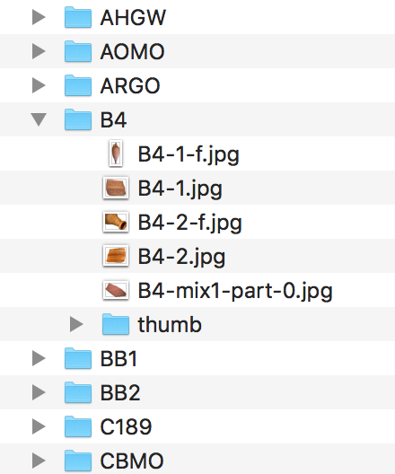

Build an Image Classifier with Tensorflow
To build an image classifier, we will follow the Tensorflow for Poets tutorial. While the tutorial is more or less straightforward, there are still some hidden gotchas.
Get some data
But first, we need to have data arranged into labelled categories, like so (imagining we were working with Roman fabrics and wares):
|
|-training-images
|
|-terrasig
|-african_red_slip
|-veranice_nera
etc. Potsherd.net has a lot of this information, and it’s well organized. For this tutorial, we’ll use that data as our own data is not yet ready for this stage.
The first thing to do is to write a scraper to grab the images and put them in sensible folders.
Scrapy can do this. But I haven’t really learned how to use Scrapy from scratch yet - it’s one thing to repurpose or use code that someone else has developed, quite another to write ex novo. The Programming Historian has an excellent piece by Jeri Wieringa on using ‘Beautiful Soup’ to parse a webpage - we’ll use that in conjunction with wget to get the information we want.
Potbot.py
Open a text editor and start a new file. First thing we’ll do is import some modules that make life easier:
from bs4 import BeautifulSoup
import csv
import requests
r = requests.get('http://potsherd.net/atlas/Ware/')
soup = BeautifulSoup(r.content, "html.parser")
We create a variable r that tells python we want it to go out onto the web and retrieve the html at that location; we then tell python to pass the html to BeautifulSoup for processing. Next, we tell the program to create a new csv file for us to use as our output container:
f = csv.writer(open("output.csv", "w"))
f.writerow(["Domain", "Path"]) # Write column headers as the first line
Then comes the magic. We tell python, via BeautifulSoup, to look in the html for a table (having studied the html of our target site, we know that the links to the individual ware pages are organized using html table tags) and then grab the information contained in the a tags.
trs = soup.find_all('tr')
for tr in trs:
for link in tr.find_all('a'):
fulllink = link.get ('href')
print (fulllink) #print in terminal to verify results
f.writerow(["http://potsherd.net/atlas/", fulllink]) # Write column headers as the first line
et voila. Save all that as a .py file, and from the terminal, run it:
$ python potbot.py
A new file ‘output.csv’ is created with two columns. The first column contains http://potsherd.net/atlas/ and the second column contains the rest of the paths we want. Delete all , and delete the header row; save as urls.txt and we can then use wget like so:
wget -r -w 2 --limit-rate=20k -A jpeg,jpg,bmp,gif,png -i urls.txt
This command tells wget to follow the paths in the input file urls.txt, to wait a moment between requests, to limit the amount asked for each time, and to only keep images. Go get a coffee, come back later, and you’ll have a lovely directory of data.

The Tensorflow bit
Set up a virtual environment first - that is to say, a special arrangement where you are using python and installing bits and pieces just for this tutorial, just to this particular version of python. Here is a primer on how to do this. If you don’t use a virtual environment, you probably won’t notice any problems - at first. But as you do more and more code work, you’ll start encountering conflicts and weird errors as various packages are installed and fight with each other.
My virtualenv uses python 3.6.1.
Get tensorflow:
$ pip install --upgrade "tensorflow==1.7.*"
Get the Tensorflow for poets codebase:
$ git clone https://github.com/googlecodelabs/tensorflow-for-poets-2
$ cd tensorflow-for-poets-2
Look at that directory in your finder. There’s a folder called tf_files. Copy the data you want to use as training data into that folder; if you’re using the pottery data from above, copy the gallery folder so that you now have tf_files/gallery. (nb make sure you have the right gallery folder - potsherd.net has two folders in slightly different places called gallery. One has image data arranged by ware; one doesn’t.)
The tutorial now wants you to set some environment variables, and to launch a process to monitor everything. You don’t need to do this. If you do decide to launch the process, eg,
$ tensorboard --logdir tf_files/training_summaries &
…you’ll need to open a new tab in your terminal and activate your virtual environment again (eg., $source env/bin/activate) to carry on. Having this monitoring process running also lets you use a browser-based tool at http://0.0.0.0:6006/ to do some other high-level tensor things, but these aren’t necessary for our purposes today.
Moving on - it’s time to retrain the model! The command, in the tutorial, looks like this:
python -m scripts.retrain \
--bottleneck_dir=tf_files/bottlenecks \
--how_many_training_steps=500 \
--model_dir=tf_files/models/ \
--summaries_dir=tf_files/training_summaries/"${ARCHITECTURE}" \
--output_graph=tf_files/retrained_graph.pb \
--output_labels=tf_files/retrained_labels.txt \
--architecture="${ARCHITECTURE}" \
--image_dir=tf_files/flower_photos
See that ${ARCHITECTURE]} bit? That can be set using an environment variable. For our purposes, for the time being, we can just put the various possibilities in ourselves. I found this website useful in that regard. Because our pottery training data - though copious - is still not enough (fewer than 10000 images), we have to add another flag to our command, concerning validation batch size. Otherwise we’ll get an error message. Note also that we’re only training for 500 steps; more steps will generally get better results (but diminishing returns also apply).
Our command then:
python -m scripts.retrain \
--bottleneck_dir=tf_files/bottlenecks \
--how_many_training_steps=500 \
--model_dir=tf_files/models/ \
--summaries_dir=tf_files/training_summaries/mobilenet_0.50_224 \
--output_graph=tf_files/retrained_graph.pb \
--output_labels=tf_files/retrained_labels.txt \
--architecture mobilenet_0.50_224 \
--validation_batch_size=-1 \
--image_dir=tf_files/gallery
This will run for a while. Elements to explore: different mobilenet architectures, increasing iterations, more data. Once it’s finished training, let’s test it:
python -m scripts.label_image \
--graph=tf_files/retrained_graph.pb \
--image=tf_files/gallery/B4/B4-1-f.jpg
So we’re testing it on one of the images we trained it with. Our result:
Evaluation time (1-image): 0.265s
b4 (score=0.96954)
c189 (score=0.00678)
dr2 4 (score=0.00401)
oxrs (score=0.00397)
gaul (score=0.00185)
Try a different image:
python -m scripts.label_image \
--graph=tf_files/retrained_graph.pb \
--image=tf_files/gallery/SEGL/SEGL-ext1-part-1.jpg
Another very high result. But the proof is in the pudding- what kind of results do we get on new, never-seen-before images? A quick google search for SEGL brought up this article: https://phys.org/news/2017-06-rare-archaeological-unique-pottery-south.html which has an image of some pottery that, per the article, is SEGL. Right-click, save-as. I put it in a new folder, tf_files/testing.
python -m scripts.label_image \
--graph=tf_files/retrained_graph.pb \
--image=tf_files/testing/rarearchaeol.jpg
Result:
Evaluation time (1-image): 0.268s
oxrs (score=0.53120)
hars (score=0.07437)
c189 (score=0.06991)
como (score=0.04226)
vrw (score=0.03977)
So… it doesn’t agree with the article, but it’s not very sure itself. This is a function of not enough training data I suspect (one could interpret it as the people in the article being wrong about the attribution of the pottery, and of course, that raises the interesting philosophical condundrum of whether the machine is a ware lumper or a splitter).
Conclusion
In this tutorial, we’ve learned how to scrape a website for data, and to build an image classifier from that data. Much fine tuning and better data are required to build something where the results will be meaningful and useful. It should be apparent to the reader that much depends on just how the parameters are tuned, and the kind, quality, and quantity of training images used.